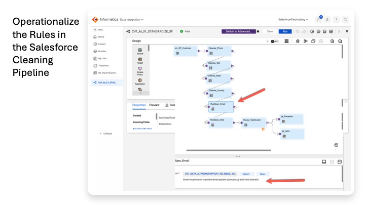
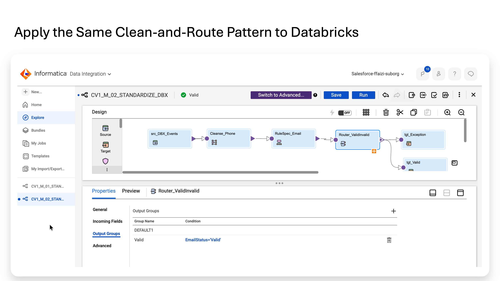
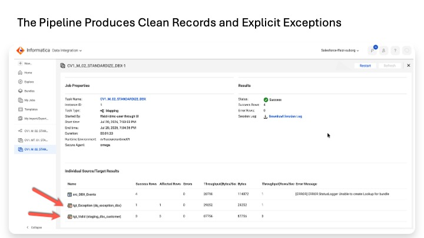

Lab 4B
Lab 4B — Operationalize and Standardize
v6 — Aug 8, 2026. Build two verified CDI mappings that standardize customer data, validate each record, and write valid and exception outputs to Databricks.
| Earlier step | What it established |
|---|---|
| Lab 0 | Sample Salesforce and Databricks data plus working connections. |
| Lab 1 | Governance vocabulary and reference context. |
| Lab 2 | Observed the raw source data without custom rules. |
| Lab 3 | Agreed what should count as valid and which values should be standardized. |
| Lab 4A | Built validation rules and measured the raw data with pass/fail scorecards. |
Apply those standards to the data itself. We build Cloud Data Integration (CDI) mappings that read the Salesforce and Databricks customer data, standardize selected values, re-check required validation rules, and write the result to Databricks.
Source record | v STANDARDIZE phone / city / state / country | v VALIDATE email / date as required by the mapping | v ROUTE +--> valid -> staging table +--> any failure -> exception table
The original sources are never changed: the mappings create standardized copies in Databricks. The clean staging tables become the input to MDM in Lab 5.
Summary: decide the standards → measure against them → apply them to create clean data.
Cloud Data Integration (CDI) is the Informatica service that reads records from a source, applies transformations, and writes results to a target. In this lab, CDI is the execution pipeline for the Cleanse and Rule Specification assets.
| Stage | Informatica transformation | Purpose |
|---|---|---|
| Read | Source | Read Salesforce or Databricks records. |
| Standardize | Cleanse | Change selected values into the approved representation. |
| Validate | Rule Specification | Add Valid / Invalid verdict columns without changing the field being checked. |
| Route | Router | Send rows to valid or exception output according to the verdicts. |
| Write | Target | Create the Databricks staging and exception tables. |
Salesforce and Databricks contain different source fields. We keep one mapping and one valid/exception table pair per source rather than forcing both sources into a single artificial schema.
| Mapping | Valid rows | Failed rows |
|---|---|---|
| CV1_M_01_STANDARDIZE_SF | staging_sf_customer | dq_exception_sf |
| CV1_M_02_STANDARDIZE_DBX | staging_dbx_customer | dq_exception_dbx |
MDM performs the cross-source identity reconciliation later. Lab 4B's job is to create reliable per-source inputs.
The Databricks mapping in this lab uses customer_events because it contains identity attributes such as email and phone hint that matter for customer matching. The transactions table is not standardized into an MDM identity feed here. Its amount/date rules can still be measured in Lab 4A and the transaction data remains available for downstream analytics and Data 360 use.
• CV1_DICT_CITY, CV1_DICT_STATE, and CV1_DICT_COUNTRY exist.
• The required Rule Specifications exist and validate.
• CV1_RS_EMAIL_VALID outputs EmailStatus.
• CV1_RS_DATE_NOT_FUTURE outputs DateStatus.
• The Secure Agent and Databricks connection CN_DBX_CV1 are working.
A Cleanse asset contains reusable standardization logic for one input. In this workshop, each asset has exactly one instance and one valid step.
Purpose: remove the formatting characters present in the sample phone values, for example (555) 0198 → 5550198.
1. Data Quality → New → Cleanse.
2. Name = CV1_CL_PHONE_NORMALIZE. Location = CV1_DATA_AI_WORKSHOP. Dimension = Consistency. Save.
3. Configuration → single instance → input name = Phone_In.
4. Add Step → Remove Values.
5. Mode = Remove Custom Strings; Delimiter = None; Scope = Anywhere.
6. Add one custom string per formatting character: (, ), -, and a space.
7. Save. Optional Test: (555) 0198 → 5550198.
8. New → Cleanse. Name = CV1_CL_CITY_STANDARDIZE. Location = CV1_DATA_AI_WORKSHOP. Dimension = Consistency. Save.
9. Configuration → single instance → input name = City_In.
10. Add Step → Replace Values.
11. Mode = Replace Input Values with Dictionary Values.
12. Dictionary = CV1_DICT_CITY. Valid Column = Column 1 (standard_value). Case Sensitive = unchecked. Delimiter = None. Scope = Anywhere.
13. Save. Optional Test: ATX → Austin.
Repeat A2 with Name = CV1_CL_STATE_STANDARDIZE, input = State_In, Dictionary = CV1_DICT_STATE. Example result: Texas → TX.
Repeat A2 with Name = CV1_CL_COUNTRY_STANDARDIZE, input = Country_In, Dictionary = CV1_DICT_COUNTRY. Example result: USA → US.
Part A result: four reusable Cleanse assets exist; phone is reused in both mappings, while city/state/country apply to the Salesforce mapping.
Salesforce CV1_Customer__c -> Cleanse Phone -> Cleanse City -> Cleanse State -> Cleanse Country -> Email Rule -> Date Rule -> Router +-> staging_sf_customer +-> dq_exception_sf
14. Data Integration → New → Mapping → Create.
15. Name = CV1_M_01_STANDARDIZE_SF. Location = CV1_DATA_AI_WORKSHOP.
16. Source → Connection = CN_SF_CV1; Object Type = Single Object; Object = CV1_Customer__c.
17. General → rename the source to src_SF_Customer. Save.
| Transform | Cleanse asset | Input field |
|---|---|---|
| Cleanse_Phone | CV1_CL_PHONE_NORMALIZE | Phone__c |
| Cleanse_City | CV1_CL_CITY_STANDARDIZE | City__c |
| Cleanse_State | CV1_CL_STATE_STANDARDIZE | State__c |
| Cleanse_Country | CV1_CL_COUNTRY_STANDARDIZE | Country__c |
For each Cleanse, drag the transformation, connect the previous object, name it, and select the asset.
• Phone / Remove Values asset: use the Cleanse-tab Add button and select Phone__c.
• Dictionary assets: if no Add button appears, use Field Mapping to connect the incoming field to City_In / State_In / Country_In.
• Output Fields should populate automatically after the input is attached.
| Transform | Rule Specification | Map incoming field | Output |
|---|---|---|---|
| RuleSpec_Email | CV1_RS_EMAIL_VALID | Email__c → Email | EmailStatus |
| RuleSpec_Date | CV1_RS_DATE_NOT_FUTURE | Last_Purchase_Date__c → DateValue | DateStatus |
For each transformation: select the Rule Specification, open Field Mapping, choose Manual, and drag the incoming source field to the rule input.
18. Drag a Router and connect RuleSpec_Date → Router.
19. Name = Router_ValidInvalid.
20. Output Groups → add group Valid with condition:
EmailStatus = 'Valid' AND DateStatus = 'Valid'
21. Keep the automatically created catch-all group DEFAULT1. It receives every row that does not satisfy Valid.
22. Use the orange + to expand the Router's output groups.
23. Connect Valid → target named tgt_Valid.
24. Connect DEFAULT1 → target named tgt_Exception.
Configure both targets:
• Connection = CN_DBX_CV1.
• Object Type = Single Object → Create New at Runtime.
• Table Format = Delta.
• Database Name = cv1_workshop.
• Operation = Insert.
• tgt_Valid table = staging_sf_customer.
• tgt_Exception table = dq_exception_sf.
• Leave Create-New-at-Runtime field mapping automatic.
25. Save. Mapping header should show Valid.
26. Click Run.
27. Select the Secure Agent Runtime Environment explicitly in the Run dialog.
28. Monitor My Jobs.
The Databricks customer_events mapping is shorter. It standardizes phone_hint and validates web_email.
Databricks customer_events -> Cleanse Phone -> Email Rule -> Router +-> staging_dbx_customer +-> dq_exception_dbx
29. New → Mapping → Create.
30. Name = CV1_M_02_STANDARDIZE_DBX. Location = CV1_DATA_AI_WORKSHOP.
31. Source → Connection = CN_DBX_CV1; Object = customer_events in cv1_workshop.
32. General → rename to src_DBX_Events. Save.
33. Add Cleanse_Phone.
34. Select CV1_CL_PHONE_NORMALIZE.
35. Click Add → phone_hint.
36. Confirm the output field is populated and leave Incoming Fields unrestricted.
37. Add RuleSpec_Email.
38. Select CV1_RS_EMAIL_VALID.
39. Field Mapping → Manual → web_email → Email.
40. Confirm 1 of 1 mapped and output = EmailStatus.
41. Add Router_ValidInvalid.
42. Add group Valid with condition:
EmailStatus = 'Valid'
43. Expand the Router outputs.
44. Valid → tgt_Valid → staging_dbx_customer.
45. DEFAULT1 → tgt_Exception → dq_exception_dbx.
Both targets use CN_DBX_CV1, Create New at Runtime, Delta, Database Name = cv1_workshop, Operation = Insert.
46. Save.
47. Run using the Secure Agent.
The two mappings are independent because they write to different tables; their run order does not matter.
-- Salesforce SELECT 'valid' t, COUNT(*) n FROM cv1_workshop_catalog.cv1_workshop.staging_sf_customer UNION ALL SELECT 'exception', COUNT(*) FROM cv1_workshop_catalog.cv1_workshop.dq_exception_sf; -- Databricks SELECT 'valid' t, COUNT(*) n FROM cv1_workshop_catalog.cv1_workshop.staging_dbx_customer UNION ALL SELECT 'exception', COUNT(*) FROM cv1_workshop_catalog.cv1_workshop.dq_exception_dbx;
• Salesforce valid: sf-003 and sf-004.
• Salesforce exception: sf-001 future date; sf-002 invalid email.
• Databricks valid: ev-001, ev-002, ev-004.
• Databricks exception: ev-003 empty email.
• Each mapping processed 4 rows, and valid + exception must reconcile to 4.
Check that valid outputs show standardized values such as digits-only phone, Austin, TX, and US where applicable.
SELECT 'SF' src, Email__c email, Phone__c_Cleanse_Phone phone FROM cv1_workshop_catalog.cv1_workshop.staging_sf_customer UNION ALL SELECT 'DBX', web_email, phone_hint_Cleanse_Phone FROM cv1_workshop_catalog.cv1_workshop.staging_dbx_customer ORDER BY email;
You should see sarah.jenkins@gmail.com and diego.m@example.com in both source outputs. These exact-email overlaps are the pairs MDM can compare in Lab 5.
Both targets use Create New at Runtime and Insert. For a clean rerun, drop the four Databricks output tables; the mappings recreate them on the next run.
| Symptom | Likely cause / correction |
|---|---|
| Cleanse Output Fields empty | Input field was not attached. Use Add or Field Mapping depending on the asset type. |
| Downstream transform has 0 incoming fields | An upstream transform is incomplete or Incoming Fields were restricted. Restore Include All Fields. |
| Cleanse has unexpected second input | The Cleanse asset has duplicate instances. Delete the extra instance and keep one meaningful input. |
| Cleanse shows 0 valid steps | The step was not added. Build the Remove Values or Replace Values step. |
| Rule Spec shows 0 of 1 mapped | Drag the incoming field to the rule input on Field Mapping. |
| Router field-name conflict | Rule outputs are both named Status. Use EmailStatus and DateStatus in the Lab 4A assets. |
| No group-picker appears on Router | Expand Router with the orange + and connect from the group's own port. DEFAULT1 is the catch-all. |
| Target has Salesforce objects / no Create New at Runtime | Target connection is still Salesforce. Change to CN_DBX_CV1. |
| Rows Processed = 0 with Salesforce query error | Clear the stray Source filter. |
| Databricks warehouse is overloaded | Close unused mapping/Preview panels and manage the SQL Warehouse when idle. |
• 4 Cleanse assets exist with one instance and one valid step.
• Both mappings show Valid and ran successfully.
• My Jobs shows Rows Processed = 4 for each mapping.
• Four Databricks output tables exist.
• Splits are 2/2 for Salesforce and 3/1 for Databricks.
• Standardized values are present in the valid tables.
• Raw Salesforce and Databricks source data is unchanged.

The Salesforce CDI mapping turns the quality design into an executable flow. It reads the source record, standardizes phone, city, state and country, applies the email and date rules, and then routes acceptable records to staging and failed records to the exception target. The original Salesforce data is not overwritten.

The Databricks mapping follows the same architecture with the controls appropriate to that source: read the event record, normalize the phone value, validate email, and route the result either to clean staging or to the exception table. The pattern is reusable even though the source-specific rules differ.

The Databricks mapping completed successfully for all four input rows. Three records were written to staging_dbx_customer and one was routed to dq_exception_dbx, showing that failed quality checks are separated rather than silently allowed into the downstream MDM feed.
We operationalized the data-quality decisions. The mappings now produce source-specific clean staging tables for MDM and keep failed rows separate for review.
Salesforce raw data --> standardize + validate --> staging_sf_customer / dq_exception_sf Databricks raw data --> standardize + validate --> staging_dbx_customer / dq_exception_dbx Both staging tables | v Lab 5 MDM matching and mastering
In short: Cleanse standardizes the data, Rule Specifications validate it, and the Router separates usable records from exceptions.
Lab 5 takes the Salesforce and Databricks staging outputs as separate source inputs. Customer 360 uses the matching email values to identify cross-source pairs. In the verified workshop flow, the Salesforce Sarah record sf-003 matches Databricks ev-001 on sarah.jenkins@gmail.com and is merged into one golden record; ev-002 remains separate because its email is different.
Demo note: a later Lab 8 exercise recreated the Salesforce output tables. Preserved copies staging_sf_customer_bkp_20260807 and dq_exception_sf_bkp_20260807 can be used when demonstrating the original rows without rerunning the mapping.
• New mapping: Data Integration → New → Mapping → Create.
• Each Cleanse transformation uses one Cleanse asset.
• Each Rule Specification transformation maps one incoming field to the rule input and adds its output verdict.
• Leave Cleanse Incoming Fields as Include All Fields.
• Router: add Valid and use DEFAULT1 as the catch-all exception path.
• Databricks Create New at Runtime creates the Delta target on first run; Database Name = cv1_workshop.
• Source data remains unchanged; standardized outputs live in the staging/exception tables.
Trusted Data Foundation Workshop